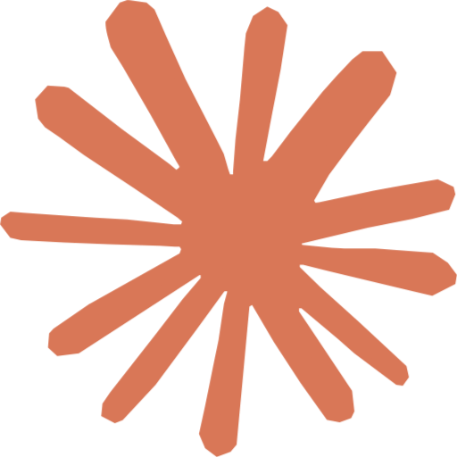

For

Claude Code ·Answers in plain English.
With pretty pictures.
Big-brain reply on top. Plain-English nudge at the bottom. Pictures when things get long.
DS Mode /dɛs məʊd/ n. from German Dumm Sprecht: to speak simply.
For people who skim. Built by one of them.
See it in action.
A real long-winded question, a real long-winded answer, a recap you can actually use — and a one-page summary that pops open in your browser.
Short version: she's not mad. She's running an experiment, getting paid for it, and bored.
Hunt instinct. Cats have inherited prey-detection wiring. Anything small that moves when batted reads as prey — mug, keys, pen, doesn't matter. The mug shattering is irrelevant to that wiring.
Attention payout. You react every time. Yelling, laughing, picking it up, putting it back — to her that's a jackpot. The behavior gets reinforced even when you think you're punishing it.
Bored cat, big stage. No prey to chase, no climbing, no puzzle — your counter is the only show. The fix isn't discipline. It's environment: vertical space, scheduled play, food puzzles.
- Cats hunt, test gravity, and like your reaction.
- Your yelling teaches them to do it again.
- Bored indoor cats turn tables into a stage.
Opened a one-page summary in your browser. →
↑ this opens for real → view full one-pager
What it is
A free config for your AI coding agent. Adds a short, plain-English recap to the bottom of every long answer — and pops a one-page picture in your browser when the answer covers a lot. That's it.
Plays nice with
Install
One line. Every tool.
# installs to every AI tool I detect on your machine
bash <(curl -fsSL https://raw.githubusercontent.com/nathan-hekman/ds-mode/main/install-all.sh)
Or just one tool:
Claude Code
bash <(curl -fsSL https://raw.githubusercontent.com/nathan-hekman/ds-mode/main/install-claude-code.sh)
User-global. Per-session toggle: /dsm
 Cursor
Cursor
curl -fsSL https://raw.githubusercontent.com/nathan-hekman/ds-mode/main/adapters/cursor/.cursorrules -o .cursorrules
Per-project. Run from your repo root.
 Codex CLI
Codex CLI
mkdir -p ~/.codex && curl -fsSL https://raw.githubusercontent.com/nathan-hekman/ds-mode/main/adapters/codex/AGENTS.md -o ~/.codex/AGENTS.md
User-global.
 Copilot Chat
Copilot Chat
mkdir -p .github && curl -fsSL https://raw.githubusercontent.com/nathan-hekman/ds-mode/main/adapters/copilot/copilot-instructions.md -o .github/copilot-instructions.md
Per-repo. TL;DR only — no auto-HTML in standard Copilot.
Want a port for Continue, aider, JetBrains, or something else? Open an issue.